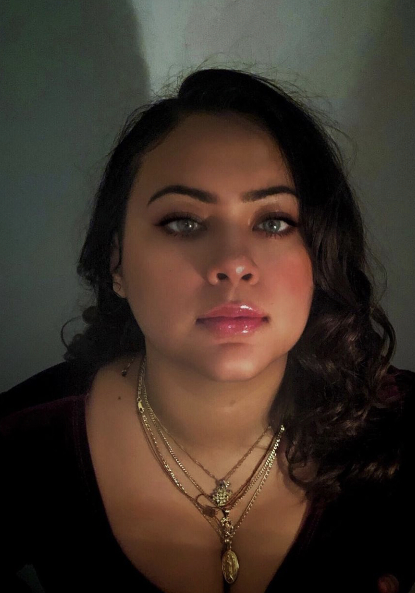
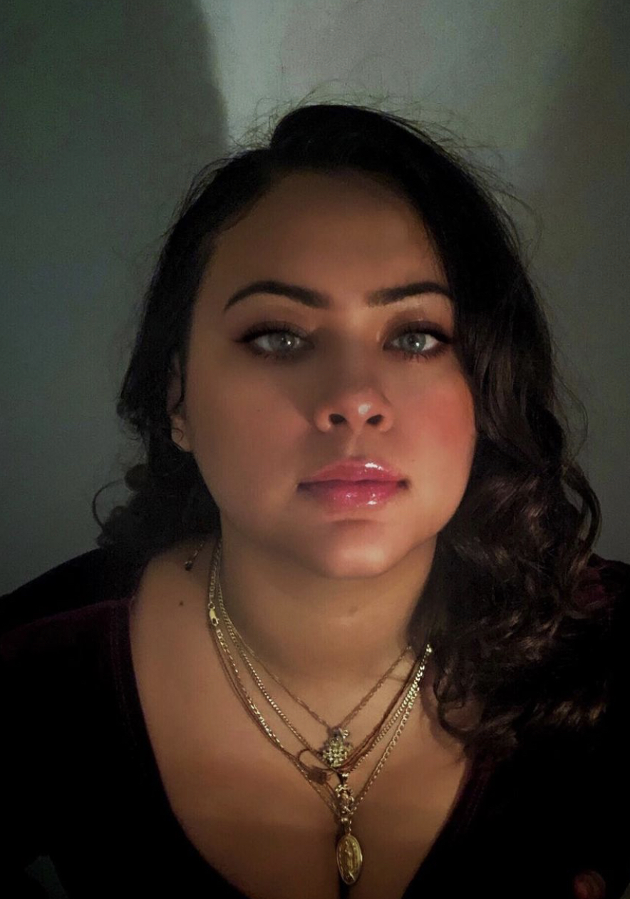

 {kind=link}
About Me
Dear Reader,Hello and welcome! My name is Judith Castillo and I would like to introduce myself a bit before you begin to browse around the website. I was born in San Francisco, California to immigrant parents who were in search of a better life so that they and their future generations can live in peace and have a better opportunity to succeed. After all their struggles they were able to start two Family owned businesses. From a young age my they would take me everywhere with them so I could learn how to run it one day in future. They believed that by doing so, my siblings and I would have some security in this life if anything were to happen. Although, the businesses are there, they still push us to be more. My parents would tell us, "The only way for a minority to be someone in the US, is to be a super star." Another phrase that was commonly said to us was, "Don't be a statistic." My parents overall strived and still strive for us to be more in this life. However, they also taught us the importance of giving back to the community. They would take us to volunteer with people who needed help. In particular, they would take us with Missionaries of Charity. All in all, my parents did their best to show the importance of making ourselves better people not only in studies, businesses, but also and most importantly to be good to others, take action, and be involved with social justice.
Nowadays, I am still hoping to be all that my parents want me to be and more. In particular the one that influenced me the most was volunteering. I have traveled around the world learning about different cultures and interacting with locals. During those adventures I would make sure to give some time to volunteer as well. For example, in Mexico I was helping at a day care taking care of the children who's parents could not afford to pay someone to watch over them while they worked. In particular I was working closely with a child whom had autism. In Panama, I got to work with younger children who were abandoned due to the fact that they had disabilities and as well with the elderly who were also abandoned due to their mental health. Those are just some of my many experience. However, the important part one most learn about this is that you have to be the same person wherever you are in the world. When coming back home, I would give talks about my experiences and the importance of learning about each other's cultures, the social dilemmas that occur, and the importance of showing love. At this moment I am working with youth groups and trying to teach them the importance of community, since together we are stronger.
Sincerely,
Judith Castillo